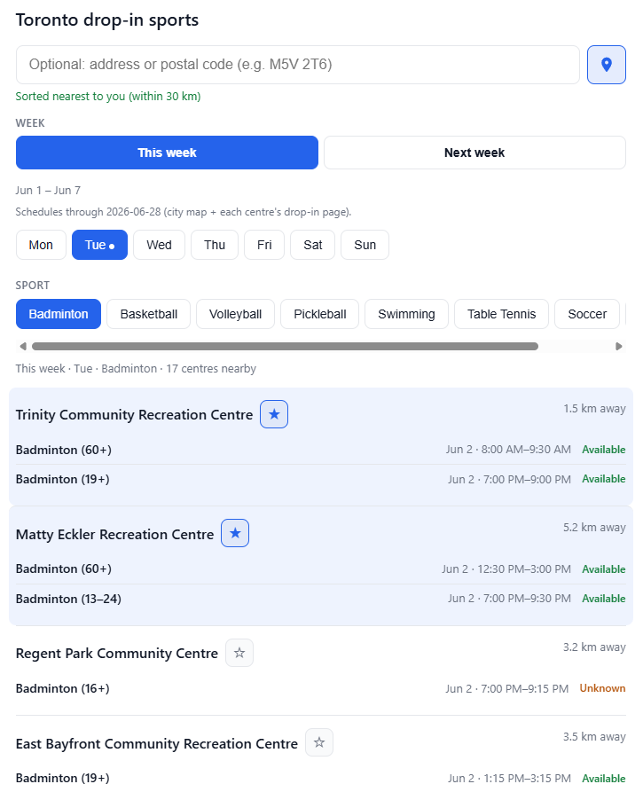
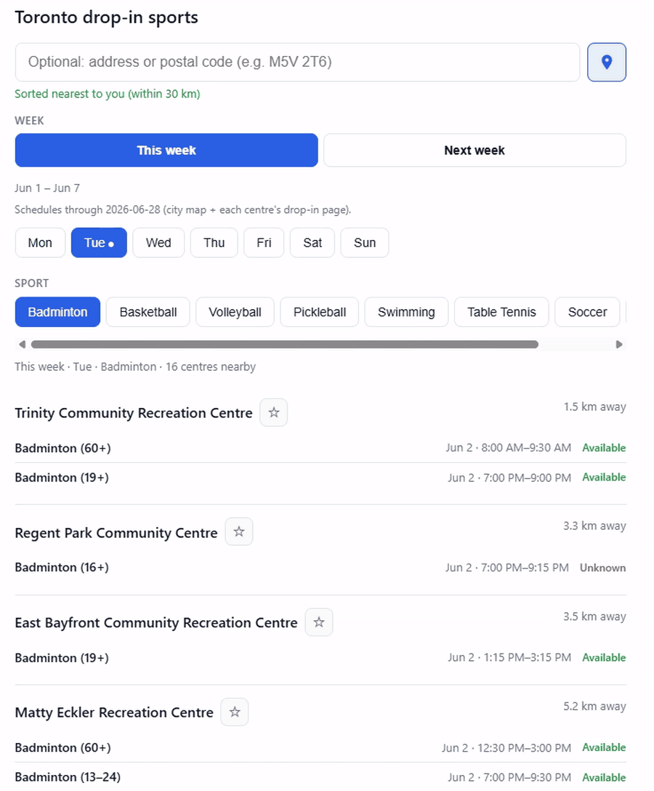

Personal project / Web
Toronto Drop-In Finder
A single-page site that answers one question I kept asking every week: where can I actually play badminton near me, on the day I am free, without opening six different tabs?

Overview
Toronto Drop-In Finder is a lightweight web app for browsing drop-in sports at City of Toronto community centres. Allow your browser location (or type an address if you prefer), pick a sport and a day, and the page shows nearby centres sorted by distance with session times — no account, no map maze, no digging through PDF schedules.
I built it because the official tools are spread out: the drop-in sports map is useful but not built around “what is closest to me this Tuesday for badminton?” I wanted something that felt more like checking the weather — open the page, get an answer, leave.
Why I built it
I play badminton casually and I am often trying to fit a session between labs or transit. Toronto publishes a lot of recreation data, but finding a session still means jumping between the sports map, individual centre pages, and sometimes guessing which week’s schedule is posted.
The friction is small every time, but it adds up — especially if you are new to the city or you do not already know which community centre is “yours.” I wanted a tool that respects how people actually search: near me, this sport, this day.
Key features
- Browser location — asks for permission on load and sorts centres nearest-first within 30 km; a pin button retries if you blocked it the first time
-
Optional address or postal code — overrides GPS when you type;
geocoded to Toronto with live re-sort as you type (Canadian postal codes
normalized, e.g.
M5V2T6→M5V 2T6) - Favourite centres — star any centre to pin it to the top; favourites stay visible even outside the 30 km radius
- Sport tabs — Badminton, Basketball, Volleyball, Pickleball, and others; defaults to Badminton because that is what I use most
- Day-of-week tabs — Mon–Sun with today highlighted
- This week / Next week — calendar weeks, not just a rolling seven-day window from one feed
- Session details — time range, age group when available, and status labels (available, full, cancelled, etc.)
-
Light mode by default — optional dark mode toggle; favourites
stored in
localStorageon your device

Technical implementation
The stack is intentionally boring: one server.mjs file serves the
frontend and a small REST API. There is no Webpack or Vite — React loads from
esm.sh as an ES module in the browser. That kept the project easy
to reason about and cheap to host.
How data gets in:
- On refresh, the server pulls centre locations from the City’s ArcGIS drop-in sports layer
- It merges schedule JSON from the city map feed and each facility’s drop-in page (up to four calendar weeks — that is where “next week” actually lives)
-
Everything is normalized into one event list and written to
data/cache.jsonlocally; a committeddata/cache.seed.jsonsnapshot ships with deploys -
On Render cold start, the server copies the seed to
cache.jsonso schedules appear immediately, then refreshes in the background -
The frontend calls
GET /api/schedule(with retry if the cache is still warming) and filters client-side by week, weekday, sport, and distance
How location works: by default the browser’s Geolocation API
supplies coordinates client-side — nothing is sent to my server unless you type
an address. Manual search goes through /api/geocode (OpenStreetMap
Nominatim, bounded to the GTA). The UI computes haversine distance to each
centre and hides rows outside 30 km, except starred favourites. Sport and
day filters run on the cached events already in memory, so switching tabs feels
instant.
// Simplified flow
Page load → browser geolocation (optional) → (lat, lng)
OR typed address → /api/geocode → (lat, lng)
→ filter events by localDate, dayOfWeek, sport
→ pin favourites to top; sort others by distance
→ render listDesign decisions
I treated this as a single-page utility, not a product with onboarding. The whole interaction model is visible at once: location field and pin on top, week and day across the middle, sport tabs, then the list. No hamburger menu, no nested settings.
- Location-first, address optional — most people should get a sorted list without typing; the address field is there when GPS is wrong or blocked
- Light mode default — matches how most people skim schedules in daylight; dark mode is there if you want it
- Live filtering — debounced geocode on address input; tab switches are instant because filtering is client-side
-
Favourites without accounts — star a centre once; it stays
pinned on that device via
localStorage - Hide empty centres — if a location has no matching sessions for that day/sport/week, it does not clutter the list
- Honest empty states — when the city has not posted next week yet, the UI says so instead of looking broken
The goal was always speed: fewer decisions between “I want to play” and “I know where to go.”
Challenges & learnings
Data is messier than the UI suggests. The sports map feed only covers about a week ahead. Longer schedules sit on each centre’s facility page behind a different JSON API. Merging those sources without duplicate sessions took more care than I expected.
Time zones matter. Early versions used the browser’s default
Date methods and mis-labelled Sundays or “this week” boundaries.
Fixing that meant storing localDate in Toronto time and deriving
weekday from that string, not from UTC timestamps.
Deployment is part of the feature. Render’s free tier sleeps
after idle time and wipes disk on wake — so a full scrape on every cold start
would leave users staring at “Loading schedules…” for minutes. I bundled
cache.seed.json in the repo, copy it on boot, refresh in the
background, and retry from the client if the API is not ready yet. The app also
lives at torontodropin.ca (Cloudflare DNS → Render) instead of
only the default .onrender.com URL.
What I took away: scraping is not just “get JSON” — it is understanding what each publisher actually means by “this week,” and designing the app so users never feel that complexity.
Future improvements
- Map view — pins for centres with pop-up session lists
- Real-time availability — tighter sync with “reserve a spot” capacity where the city exposes it
- PWA / installable app — add to home screen without an app store
- Notifications — “your sport is on tonight at the closest centre” (email or push, not another app to install)
- Beyond Toronto — same pattern for other municipalities if their feeds are open
Closing note
This started as a weekend problem I had every week. It is not a startup pitch — it is a tool I actually open before booking a court. If you are in Toronto and you play drop-in sports, I hope the live version saves you a few minutes and a bit of frustration.